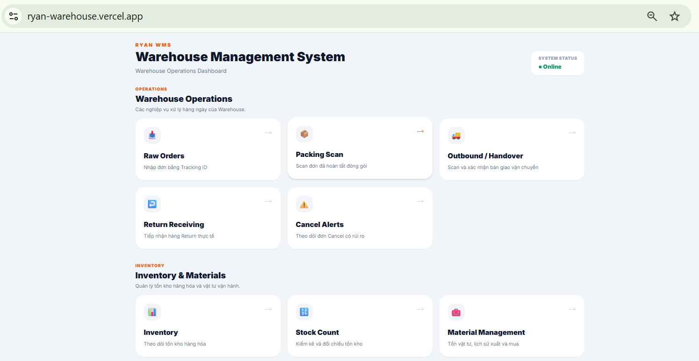
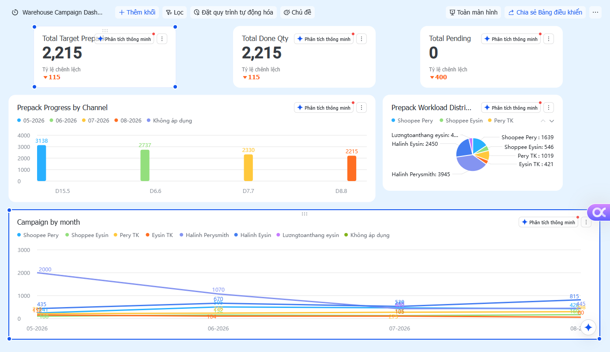
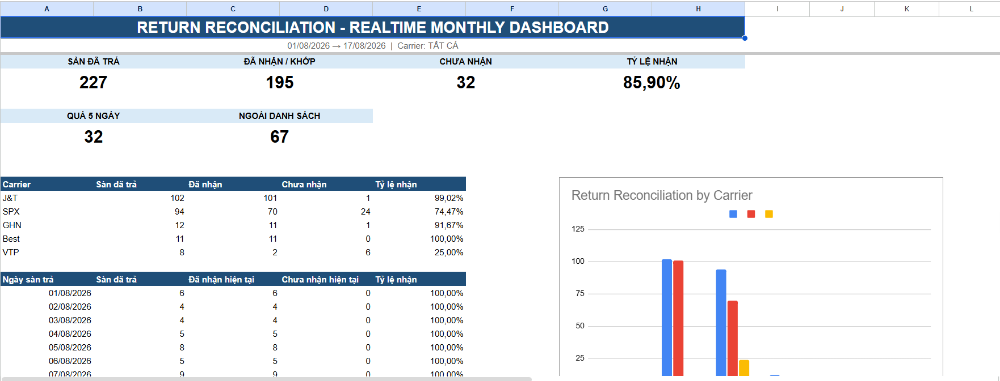
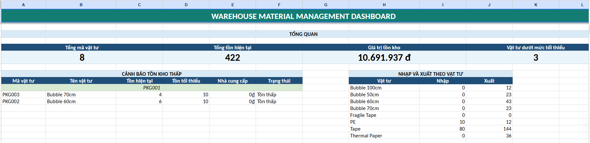
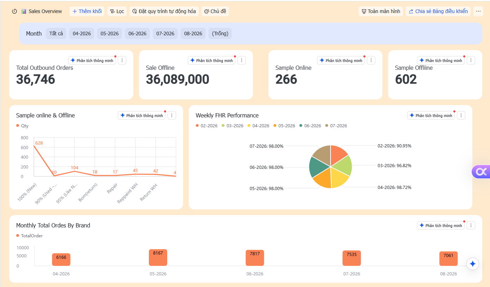
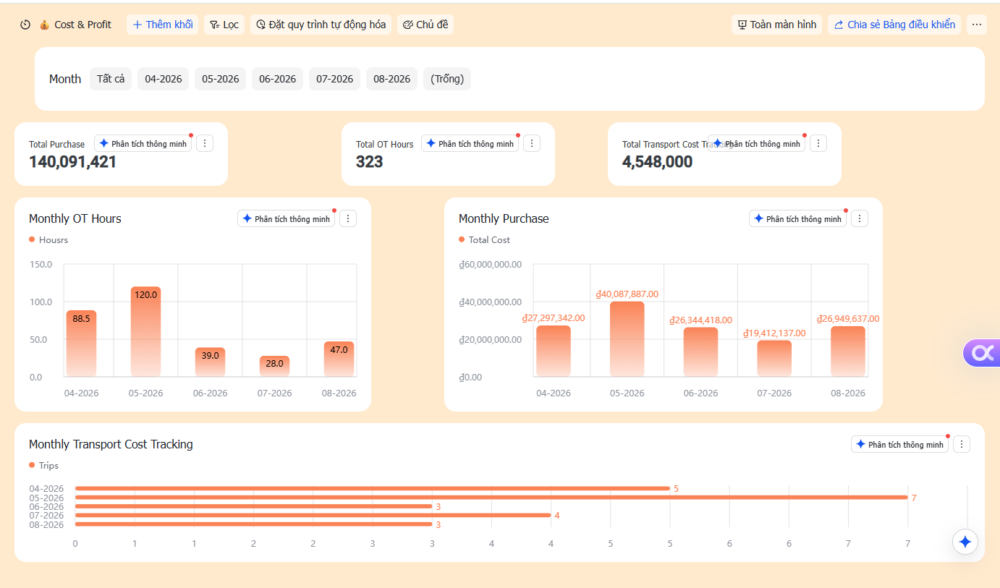
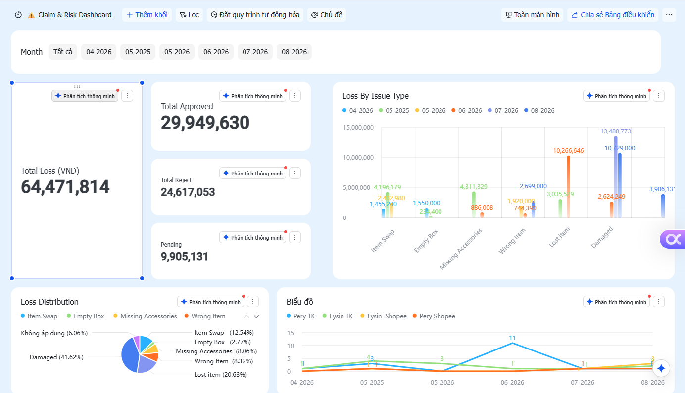

~80% faster handling
WAREHOUSE OPERATIONS · PROCESS EXCELLENCE · DIGITALIZATION
Operate today.
Build for tomorrow.
I build reliable warehouse operations through people leadership, SOP, automation, loss prevention, cost control and cross-functional execution.
1,100 m²
Warehouse scope
8K–12K
Orders / month
End-to-end
Operations ownership
TRƯƠNG MINH CHÍ (RYAN)
Warehouse Operations &
Inventory Management
Inventory Control · Process Improvement
EXECUTIVE PROFILE
Warehouse operations leader focused on control, scalability and business outcomes.
Warehouse operations leader experienced in end-to-end execution, workforce planning, fulfillment, inventory governance, reverse logistics, loss prevention, cost visibility and digital process improvement.
I translate operating problems into ownership, SOP, KPI, control mechanisms and measurable actions across people, process, inventory, service, cost and risk.
People Leadership
Inventory Control
Fulfillment
Reverse Logistics
SOP & KPI
Automation
TRANSFORMATION SCORECARD
Measurable management impact.
~94–100% reduction
Carrier-return leakage eliminated
Recovered value / revenue
Previously overlooked claim value
Built standards from scratch
Lower labor dependence. Lower loss. Faster flow. Recovered value. Stronger operating discipline.
OPERATING SYSTEM
End-to-end warehouse control architecture.
Physical execution supported by scripts, SOP, KPI, audit trails and management dashboards.
OP RELEASE
→
PACKING
→
OUTBOUND
→
HANDOVER
→
RETURN / RTO
→
TECH
→
RECOVERY
Order processing / packing
Carrier handover / return receipt
Inspection / recovery
Tracking validation / duplicate control
Timestamps / locks / reconciliation
Exception handling / KPI
Campaign / manpower / PO
Materials / cost / claims
Return / warranty / compliance
FLAGSHIP DIGITALIZATION PROJECT
Ryan WMS — Warehouse Operations Control System.
A self-designed warehouse operations system created from real e-commerce operating requirements. This public portfolio intentionally presents only selected capabilities and interface views; detailed workflow logic, validation rules and internal process design remain private.
PROJECT ROLE
Process Owner · System Designer · Builder
Operations-first digitalization project
Digital execution support, status visibility and operational traceability.
Preventive controls and exception visibility designed to reduce execution risk.
Inventory monitoring, physical verification and stock-risk visibility.
Operational reporting for performance review and continuous improvement.

01 · OPERATIONS CONTROL
One digital control layer for warehouse operations
Centralized operational visibility across fulfillment, returns, inventory control and management reporting.
PROJECT CAPABILITY
Process Design · Warehouse Digitalization · Data Control · Operational Reporting
Public showcase: selected views demonstrate product ownership and system-building capability. Detailed workflow architecture, business rules, database design and source code are intentionally not disclosed.
SELECTED CASE STUDIES
From operational problem to business result.

01
Protecting FHR during peak sales
Forecast workload, prepack volume, manpower allocation and carrier handover requirements. When packing was behind plan, coordinated carrier pre-scanning and handover preparation while packing continued in parallel.
2,215 / 2,215 prepack · 0 pending

02
Return reconciliation & carrier accountability
Built tracking-level reconciliation between platform return records and physical warehouse receipts, with carrier follow-up and aging exceptions.
Return leakage: ~50% → 0%

03
Materials, supplier & finance control
Forecast packing-material needs, monitor minimum stock, coordinate supplier pricing and availability, and maintain cost visibility with local and China Finance.
Supply continuity + cost visibility
MANAGEMENT CONTROL TOWER
Managing the warehouse through service, cost and risk.
Selected management views used to connect daily warehouse execution with service performance, resource spending and operational loss exposure.



MANAGEMENT APPROACH
Service Level · Cost Control · Loss Prevention · Continuous Improvement
Dashboards are presented as management tools rather than standalone analytics projects: the objective is to turn warehouse data into operating priorities, corrective actions and measurable follow-up.
CROSS-FUNCTIONAL LEADERSHIP
Warehouse as a business partner.
OP + CS
Return, warranty, order issues,
customer experience
China Team
Inbound shipments, supply and product issues
Technical + Partners
Technical issues and urgent sale-day recovery
Finance / Accounting
Inventory, cost, claims and expenses
Carriers
Pickup, handover, returns and contingency
Suppliers
Material price, availability and continuity
PROFESSIONAL RESUME
Experience, capability and credentials at a glance.
A concise recruiter-facing resume integrated with selected case studies and project evidence.
TRƯƠNG MINH CHÍ (RYAN)
Warehouse Operations · Inventory Control · Process Improvement
ryanopsvn@gmail.com
Ho Chi Minh City, Vietnam
Warehouse & logistics operations professional with nearly 4 years of experience across multi-site logistics and e-commerce warehouse operations. Experienced in team leadership, KPI governance, inventory control, SOP development, process improvement, cost visibility, loss prevention and warehouse digitalization.
Warehouse Leader (promoted from Storekeeper)
Kingden Trading Co., Ltd.Lead day-to-day control of a 1,100 m² e-commerce warehouse handling approximately 8K–12K orders per month, covering fulfillment, inbound/outbound, inventory, returns, technical/warranty coordination and management reporting.
- Lead manpower planning, KPI review, workload prioritization and daily execution across warehouse functions.
- Drive inventory governance, reconciliation, exception control, loss prevention and process standardization.
- Coordinate cross-functionally with Operations, CS, Finance, Purchasing, technical teams, suppliers and logistics partners.
- Build management controls, dashboards and digital workflows to improve service visibility, cost awareness, traceability and decision-making.
Regional Operations Supervisor
Giao Hang Tiet Kiem (GHTK)Managed daily operations across multiple delivery stations, focusing on KPI performance, resource coordination, service quality and continuous improvement.
~50% → near 0%Return-related loss reduction
~5 min → ~1 minManual processing time
~350 h → 0–20 hPeak-sale OT requirement
>99%Stable-period fulfillment health rate
Ryan WMS — Warehouse Operations Control System
Self-initiated warehouse digitalization project designed to strengthen execution control, inventory visibility, exception management and management reporting. Public views are intentionally limited; detailed workflow logic and implementation remain private.
View selected project evidence →CAREER JOURNEY
Operations experience built step by step.
B.B.A. — International Business
University of Finance and Business Administration (UFBA)
Regional Operations Supervisor — GHTK
Multi-site KPI, resource coordination, incident handling and branch management support.
Storekeeper → Warehouse Leader — Kingden
Progressed into warehouse leadership with responsibility for daily execution, inventory governance, SOP/KPI, cost visibility, loss control and digitalization.
WAREHOUSE MANAGER VALUE
People. Process. Execution.
Business. Control. Digital.
Available to demonstrate sanitized warehouse systems and dashboards during interview.